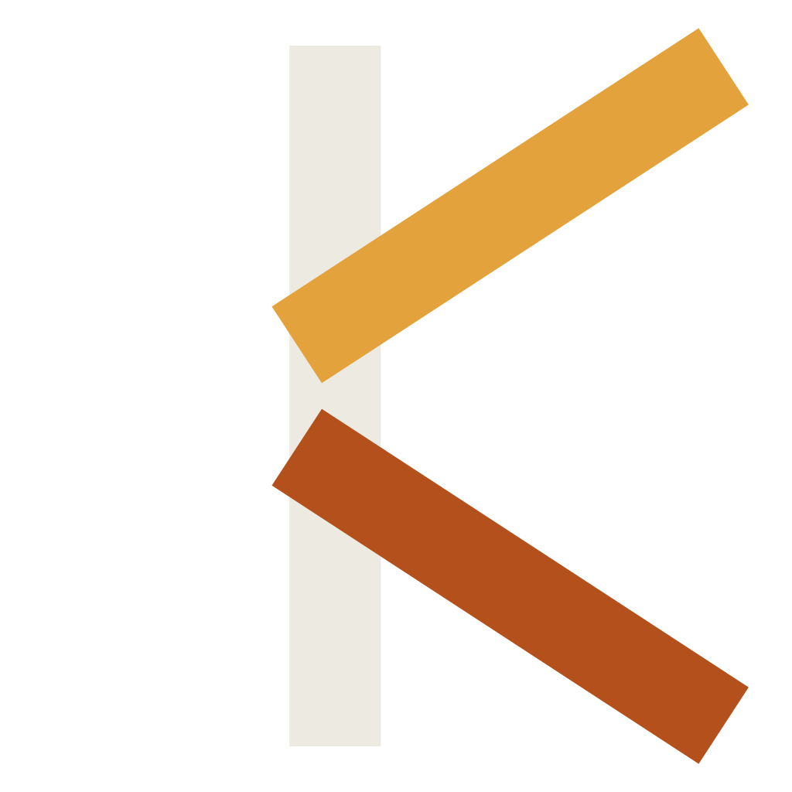

Readable by default
Clean blocks, inferred types, and expressive patterns keep the signal high without hiding the machinery.

kirnopen source · under active development
Kirn is a modern general-purpose language that keeps the joy of a high-level language and brings it to a compiled, strongly typed toolchain.
struct Greeter {
name: string;
fn greet(self) -> string {
return "Hello, " + self.name + "!";
}
}
fn main() {
greeter = Greeter(name: "world");
print(greeter.greet());
}Kirn is being built for people who want their language to get out of the way. Its syntax is readable at a glance, its types are there when you need them, and its compiler is designed to make the path from source to executable feel small.
Python-inspired surface. Native ambitions. A toolchain you can understand.
Clean blocks, inferred types, and expressive patterns keep the signal high without hiding the machinery.
Strong types, optionals, results, and explicit error handling help catch surprises before runtime.
A C++20 compiler today, with an AOT backend and a small, fast runtime on the roadmap.
Kirn was created by RK Riad Khan (RKRIAD585) and is being shaped in public. The project is open source, experimental, and always welcoming to readers, testers, and contributors.
Meet RK Riad Khan on GitHub ↗Language design is a conversation between the code we write today and the programs we want to write tomorrow.
— the Kirn projectFrom a first script to structured, concurrent programs, Kirn grows with the problem instead of making you learn a new dialect for every scale.
Structs, enums, traits, generics, optionals, and results give programs shape while inference keeps the everyday code light.
Option<T>Result<T, E>trait PrintableExplore spawn, channels, select, async basics, and parallel iteration as first-class language concepts.
The kirn driver is growing around build, run, test, package, and documentation workflows.
Kirn calls its reusable ecosystem packages Pets: small, inspectable building blocks for programs and projects. Browse the community registry, discover what others are building, and share your own.
Explore the Pets registry ↗Find useful building blocks for your next Kirn project.
Read the source and understand what you depend on.
Publish a Pet and grow the ecosystem in public.
Kirn’s implementation is open, modular, and actively evolving. Read the code, run the examples, and see how a language takes shape.
Kirn is a work in progress. The foundation is real; the future is being built in public.
Read the official docs ↗Lexer, parser, semantic analysis, interpreter, VM, collections, modules, and a growing example suite.
Continue the AOT pipeline toward fast, portable binaries and a simpler one-command workflow.
Grow the Pets registry, standard tooling, documentation, and editor support around the language.
Kirn is open source, unfinished, and ready for curious builders.